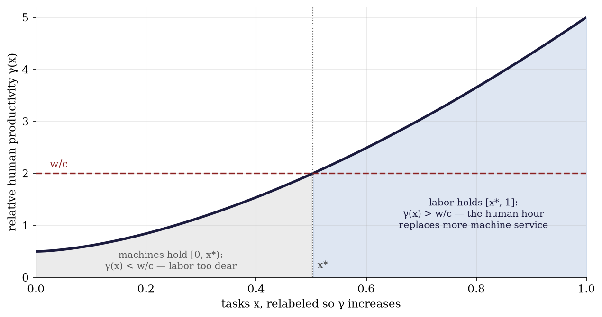
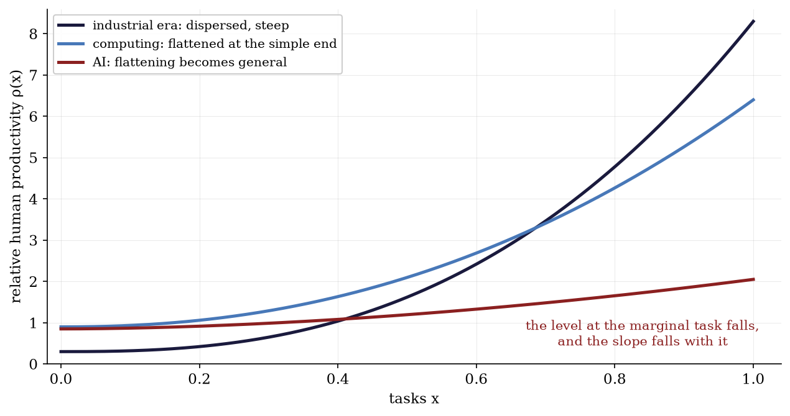
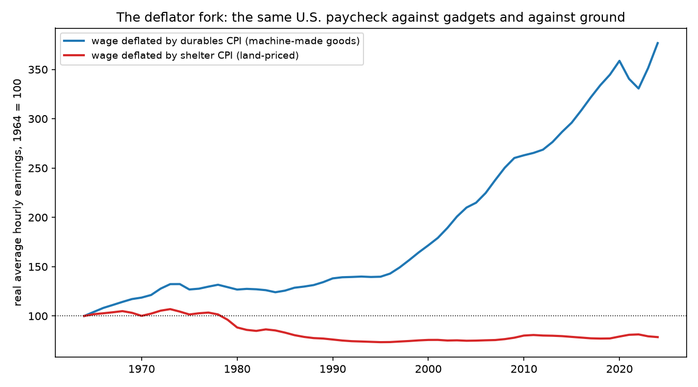
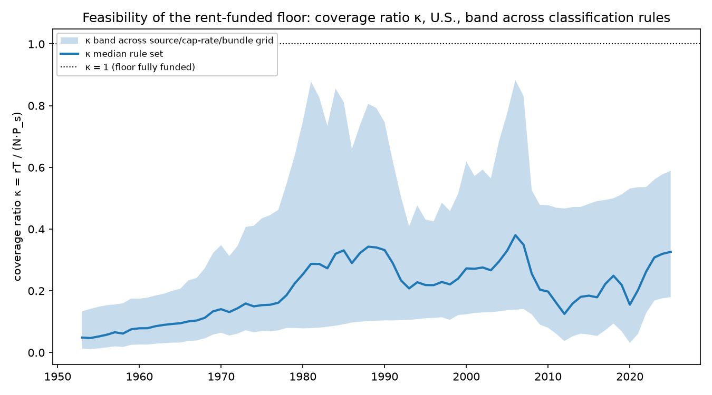
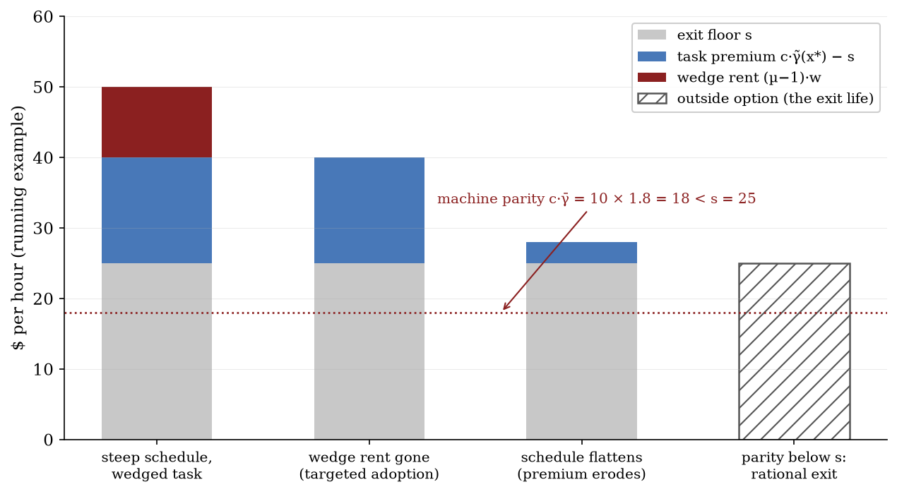
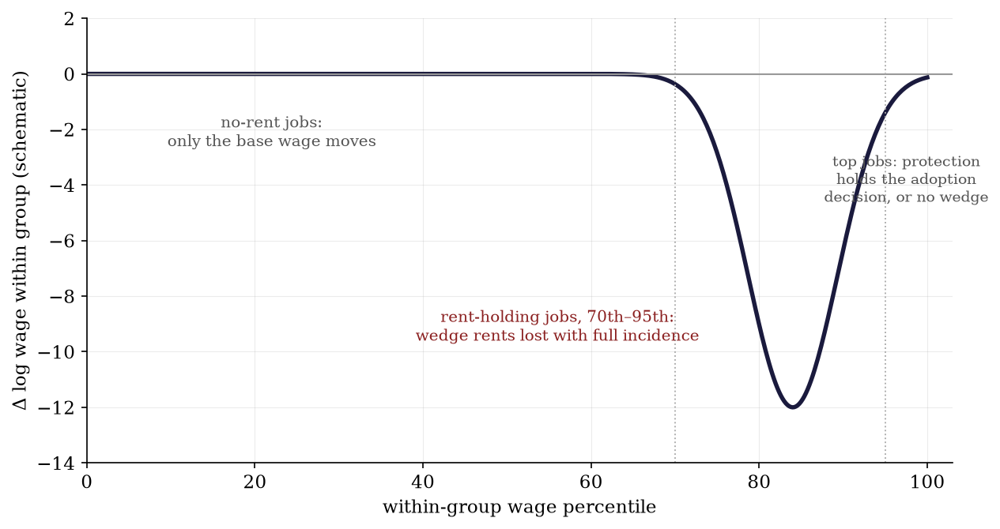
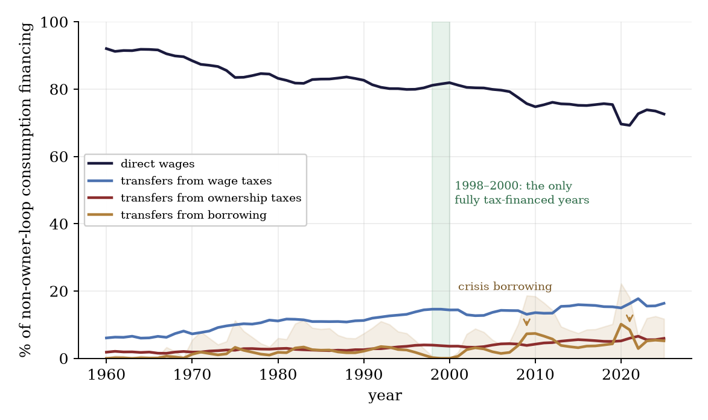

A firm can perform a task with a worker or with a machine. At the task where the firm is just indifferent, the worker's wage is tied to the cost of the machine substitute. That much is established: it is the factor-price condition at the task margin in Acemoglu and Restrepo (2018), with the same threshold logic in Zeira (1998) and, for tasks that move abroad rather than to machines, in Grossman and Rossi-Hansberg (2008). This paper begins one step later, with two questions around that margin.
What prices the substitute? A machine is itself produced — from other machines, labor, energy, sites, minerals, permissions. Its rental is an equilibrium object. Follow that price backward through production and it terminates in inputs whose supply does not expand with production itself: land is the permanent example; a grid connection, a mineral right, or a fabrication bottleneck can hold the same position over shorter horizons. While machine production still employs labor, part of the machine's cost is the wage itself, and the substitute is dear for that reason among others. As machine production sheds labor, that component goes, and the replacement price resolves increasingly into terminal rents.
What prices the alternative to working at all? A worker sells an hour when the wage beats the best alternative use of that hour. Life outside the market wage still requires somewhere to live, food, energy, warmth, and usually access to a household. The value of exit is therefore also a price — and it depends on the same scarce inputs that anchor the machine's cost. When machine-made goods cheapen while housing and energy do not, the exit option deteriorates in exactly the units that matter to the person weighing it.
The paper closes both prices around the labor margin:
on the demand side, and
on the supply side. The wage lives in an interval, replacement cost above and exit value below, and both endpoints are formed partly in the market for non-produced inputs. Technological change moves both at once: it changes what workers can do relative to machines at final tasks, it changes how much labor the machine's own production employs, and it changes the relative price of the scarce inputs that both chains terminate in.
The limiting case organizes the analysis. Suppose machine capability becomes uniform across tasks — machines at rough parity with humans everywhere, no task where the human advantage is large. In that limit every standing account of the wage becomes degenerate: there is no marginal-product schedule to climb, no bargaining surplus to split, no scarcity of labor for population to price. What survives is bookkeeping: the wage in machine-made goods is pinned by absolute human productivity and cannot fall (a point Caselli and Manning (2019) prove and this paper concedes in full), while the wage against housing, space, and energy falls without bound as the capability gap closes, because that is where the value released by automation comes to rest. The real wage forks by deflator. The fork is measurable now, and Section 10 measures it.
The task margin in this paper is Acemoglu and Restrepo's. The price recursion is the input-output logic of Leontief (1936) and Sraffa (1960). The efficiency of taxing fixed factors is George (1879). Our contribution is the closure. We price the machine rental from its own production recursion and substitute it into the task margin, so the wage is expressed in terminal rents and the transition rides on a measurable parameter, the labor content of machine production. We price the outside option in the same relative price, so both endpoints of the bargaining interval move on one variable. From the two closures we derive the fork and its fiscal completion — a rent tax funding a uniform transfer, the pair that survives the limit — and we measure the fork and the funding base in U.S. series. Section 2 places each piece in its literature deliberately, because our claim is architectural: the pieces are known, the closure is not.
The core idea and its central claims are the author's. The formalization, the proofs, the computations, and nearly all of these sentences were produced by an AI system under her direction and review. No proposition entered the draft before its algebra passed a computer-algebra check and its equilibrium claims a numerical one; the full-automation limit is additionally machine-verified in Lean 4 (see the verification note at the end). The disclosure is doubly obligatory here, because the claim that machine capability is broadening is not a speculation about other people's occupations: the capability priced in this paper is the capability that drafted it.
Section 2 surveys what standing accounts pin the wage to. Sections 3–5 build the model: the margin, the ceiling, the floor. Section 6 closes the interval; Section 7 takes the limit and states the fork; Section 8 states the welfare completion. Section 9 reads history as three configurations of one schedule; Section 10 reports U.S. measurements; Section 11 states what would falsify the account; Section 12 draws the implications for artificial intelligence. Everything supporting but not carrying — institutional wedges, the general machine sector, the closed-economy identity, the fiscal system away from the limit, human-essential tasks, the open economy — is in the appendix.
Accounts of the aggregate wage differ less in their mechanisms than in where they stop. Each family below determines the wage relative to a quantity that labor itself helps produce, or leaves it inside an interval whose endpoints it takes as given, or determines its growth rate while remaining silent on its level. We do not offer the model of Sections 3–5 against them; it supplies the objects at which they terminate.
The textbook answer sets the wage equal to the marginal product of labor. As a statement about competitive equilibrium it is correct, and this paper's Proposition 1 is an instance of it: w = c·ρ(x*) (in Section 3's notation) is the marginal product, evaluated at the margin the machine alternative sets. What the identity does not supply is a level: the marginal product is a function of the capital stock and the technology, and both are moving in the case at issue. Applied work usually proceeds under Cobb–Douglas, which imposes constant factor shares — the object whose movement motivates the present exercise — and the aggregate capital measure it requires is not innocent when the price of capital is itself the question (Sraffa 1960; Samuelson 1966). In growth theory the wage's growth rate is pinned along a balanced path, but Uzawa (1961) shows the balanced path requires technical change to be labor-augmenting in form — and the form of technical change is precisely what is at issue under automation.
The search-and-matching framework (Diamond 1982; Mortensen and Pissarides 1994; Pissarides 2000) places the wage between the worker's outside option and the value of the match, dividing the surplus by a bargaining parameter. The framework is explicit that the level is not determined within it: two endpoints and a split, and it supplies none of the three.
That the outside option carries the weight is the literature's own finding, not an outside criticism. Shimer (2005) showed that the calibrated model generates almost none of the observed volatility — in U.S. data the vacancy–unemployment ratio is roughly twenty times as volatile as labor productivity, while the model makes them comparable. Hagedorn and Manovskii (2008) resolve the puzzle by setting the value of non-market activity close to productivity, so that the surplus workers and firms split is small; Hall (2005) resolves it with rigid wages; and Ljungqvist and Sargent (2017) show that these and the other proposed resolutions operate through one channel, the fundamental surplus — "an upper bound on the fraction of a job's output that the invisible hand can allocate to vacancy creation" — which every successful calibration makes small, and whose leading deduction from productivity is the value of non-work. The central calibration debate of modern macro-labor is, in other words, a debate about the level of an object the framework treats as a parameter.
We supply both endpoints. Section 4 prices the upper wall (what the firm's machine alternative costs, and why); Section 5 prices the lower wall (what the worker's exit is worth, and why); and Section 6 observes that the two are formed partly in the same market, so they can move together — and in the automation limit, close.
The task framework (Zeira 1998; Acemoglu and Autor 2011; Acemoglu and Restrepo 2018, 2022) determines the wage at the threshold task and is the direct ancestor of what follows. Its equilibrating force is the creation of new labor tasks: displacement met by reinstatement (Acemoglu and Restrepo 2018; Autor 2015). In each version the machine rental and the outside option enter as parameters; the wage is passed through the threshold rather than determined at it. This paper closes both parameters, and holds the new-task margin shut — a modeling bet defended, with the evidence for and against, in Section 11. Acemoglu and Restrepo (2026) add institutional wage wedges and show that automation is directed at the tasks where wedges are largest; Appendix B recovers that result in this notation and carries its empirical signature.
Efficiency wages (Shapiro and Stiglitz 1984), monopsony (Manning 2003), and firm-level rent sharing (Card, Cardoso, Heining, and Kline 2018) explain why individual wages depart from a common base and why the dispersion moves. In the notation below they are accounts of a multiplicative wedge on particular tasks. The model takes them as given at that layer — Appendix B carries the wedge machinery — and asks what the base is.
The wage was pinned to land and to the cost of subsistence before it was pinned to anything else. Ricardo (1817) priced land at the margin and the wage at its natural price, Malthus (1798) supplying the mechanism; the machinery chapter added in 1821 concedes that machinery can injure the laboring class. Marx priced labor power at its cost of reproduction and read enclosure — the legal extinction of common access to land — as the manufacture of a labor supply. Lewis (1954) pinned the modern-sector wage to what the traditional sector affords — the closest antecedent to Section 5, differing in that his traditional sector is exhausted by absorption rather than priced away by rent. Polanyi (1944) recorded the institutional half of the same event. George (1879) drew the fiscal consequence this paper's Section 8 derives inside the model. These accounts were not refuted. The premise they shared — that the human advantage over tools varied little from task to task — stopped holding, and the conclusions went dormant with it. Section 9 reads the classical case as the flat configuration of the schedule built below.
Korinek and Stiglitz (2019) pose the below-subsistence scenario this model resolves through exit; Korinek and Suh (2024) is the closest formal predecessor on wage collapse under transformative AI, differing in where the collapse ends — here at non-produced factors rather than accumulated capital — and in the treatment of the outside option. Susskind (2017) and Sachs and Kotlikoff (2012) reach technological immiseration through other channels; Moll, Rachel, and Restrepo (2022) route automation's gains to wealth-holders, where this model names the terminal claimant. Aghion, Jones, and Jones (2019) supply the strongest stabilizer — expenditure concentrating on whatever remains human-essential — granted a theorem in Appendix G. Caselli and Manning (2019) prove real wages cannot fall in terms of machine-made goods; Section 7 concedes the theorem and locates the fall elsewhere. Hémous and Olsen (2022) endogenize automation's direction.
Three empirical literatures serve below as instruments rather than backdrops. Factor shares: the labor share's decline is documented and global (Karabarbounis and Neiman 2014), and its capital-side counterpart resolves substantially into housing — which is to say land (Rognlie 2015; Knoll, Schularick, and Steger 2017; Piketty and Zucman 2014); a share is not a wage, but Section 7 says which ratio to watch. The long wage record: real wages measured against the cost of a subsistence basket — welfare ratios in the sense of Allen (2001), extended for England by Clark (2005) — are the same object this paper prices as the floor, computed at the household level; Section 9 reads that record. Payroll incidence: under Proposition 1 the share of a payroll tax borne by workers maps to the inverse slope of the schedule at the margin, so the quasi-experimental incidence literature (Gruber 1997; Kugler and Kugler 2009; Saez, Schoefer, and Seim 2019) is, in this model, a repeated measurement of the schedule's flattening; Section 10 specifies that assembly — existing estimates compiled onto one pass-through definition — as open work.
Tasks. Producing one unit of the final good requires a continuum of tasks x ∈ [0,1], each in equal amount (Leontief aggregation over tasks): the good's unit cost is the sum of its tasks' unit costs. One human-hour completes γL(x) units of task x; one machine-hour completes γM(x). Relative human productivity is
A machine-hour rents for c — a parameter here, the subject of Section 4. Institutional wage wedges — union premia, licensing rents, efficiency wages — are set aside until Appendix B; nothing in the main text needs them.
People and land. N identical workers each supply one hour or exit to an outside option worth s — the value of the best life available without selling labor. s is a parameter here and the subject of Section 5; it quietly presupposes somewhere to live. Land is fixed in total, heterogeneous in quality, with the worst parcel's reservation rent zero; it stays in the background until the recursion needs it.
Labor, at wage w, holds task x when it is the cheaper input: w/γL(x) ≤ c/γM(x), i.e. w ≤ c·ρ(x). Relabel tasks so ρ increases, and assume the relabeled schedule is continuous and strictly increasing where labor is employed (flat stretches are handled in Appendix A). Competitive assignment then produces a threshold x*: machines take [0, x*), labor takes [x*, 1] (Figure 1).
Proposition 1 (the task margin). (i) In any equilibrium using both inputs, w = c·ρ(x*). (ii) The wage's sensitivity to labor supply is governed by the slope of ρ at x*: a steep schedule makes labor demand inelastic and the wage unresponsive; as the schedule flattens toward a constant ρ̄, labor demand becomes perfectly elastic at c·ρ̄ and the wage is pinned there regardless of how many or few workers exist. (iii) No equilibrium wage sits below s while anyone works: if the clearing wage would fall below s, workers exit until the wage recovers to s (possible only where the schedule has slope) or all have left.
Proof. (i) If w > c·ρ(x*), the marginal task and, by continuity, tasks just above it are cheaper by machine; firms drop labor there and the unemployed underbid. If w < c·ρ(x*), tasks just below x* strictly favor labor and bidding raises w. Only equality is stable. (ii) Absorbing more hours requires labor to win more tasks, and a firm concedes a task only when the wage falls relative to that task's machine cost; the required fall is proportional to the slope. At a flat schedule no wage above c·ρ̄ employs anyone and every wage at c·ρ̄ employs everyone willing. (iii) is the participation condition applied to (i) and (ii). Existence and uniqueness of (w, x*) are Lemma A.1. ∎
The condition is an indifference: the worker has no cost advantage at the marginal task; what is being priced is relative productivity. If c = $10 and ρ(x*) = 4, the marginal worker can be paid $40 while leaving the firm indifferent. Let machines improve uniformly by 25%, so ρ(x*) falls to 3.2: the same worker's ceiling is $32 — a 20% cut delivered entirely by someone else's machine improving at her task, with no human getting worse at anything. That arithmetic holds c fixed while machines improve, and machine progress also cheapens machine-made goods. Sections 4 and 7 do the general-equilibrium bookkeeping and locate exactly which part of the cut is real.

Proposition 1 prices labor off the machine; this section prices the machine off its recipe. Suppose one unit of machine services is produced with three kinds of inputs: a units of machine services themselves (a < 1: machines net-reproduce); λ labor-hours — the fabrication, operation, maintenance, and installation the machine sector still buys; and ℓ units of non-produced services — sites, energy, ore — renting at r, the rent of the sites production uses (parcels differ in quality; Appendix D carries the schedule). As a price equation this is the one-sector version of the input-output cost systems of Leontief (1936) and Sraffa (1960): with free entry and constant returns, the rental equals unit cost,
The first term is recursively embodied machine content; the second is the wage bill inside the substitute; the third is the claim on the inputs at which the recursion terminates. Call an input terminal, informally, when its supply does not expand through the production process itself on the horizon under study; the propositions say "non-produced." Land is the permanent case. Energy capacity, transmission, minerals, and fabrication bottlenecks can occupy the position for years at a time and then leave it; Section 4's results hold over whatever horizon the classification holds, and our long-run claims use the permanent case.
Proposition 2 (replacement closure). Let the task margin hold, w = c·ρ*, with ρ* = ρ(x*), and let machine services be priced by free entry, c = ac + λw + ℓr. If 1 − a − λρ* > 0, then
The wage is a claim on terminal rents, scaled by relative productivity at the margin and amplified by the recursion. On the viable set both prices rise in λ and in ρ*.
Proof. Substitute w = cρ* into the zero-profit condition: c = ac + λcρ* + ℓr, so c·(1 − a − λρ*) = ℓr. Multiply by ρ* for the wage. The derivatives are ∂w/∂λ = ρ*²ℓr/(1−a−λρ*)² and ∂w/∂ρ* = ℓr(1−a)/(1−a−λρ*)², both positive; and ∂c/∂ρ* = λℓr/(1−a−λρ*)², positive exactly when λ > 0. ∎
The viability condition has a reading: a + λρ* is the produced content of one unit of machine services once its labor is priced at the margin — direct machine content a, plus the machine-equivalent λρ* of its labor. If that reaches one, the sector cannot deliver services at any finite price.
The formula separates two kinds of automation that are usually discussed as one.
Task automation lowers ρ*: machines improve at tasks near the assignment margin, so a marginal human hour replaces less machine service. This is the automation of the task literature.
Recursive automation lowers λ: fewer human hours are required to produce, operate, and maintain machine services themselves. This removes the wage bill from the substitute's own cost base and cheapens the substitute directly.
Either change lowers the wage supported by a given terminal rent. And they interact: with λ > 0, task automation also cheapens the machine, because it cheapens the machine sector's own labor — a compounding the scalar closure makes visible. A worked instance, with the recursion's amplification on display: at (a, λ, ρ*, ℓ, r) = (0.5, 0.1, 3, 0.2, 1), the recipe gives c = 1 and w = 3, and one checks 1 = 0.5·1 + 0.1·3 + 0.2·1. Now let recursive automation run λ from 0.1 to 0, holding everything else fixed: c falls to 0.4 and the wage falls to 1.2 — a 60% cut from removing one tenth of an hour of labor from the machine recipe, because that tenth of an hour, priced at the margin wage, was 30% of the recipe's cost. In the limit λ → 0,
and the replacement price contains no wage at all: its reproducible components are internal to the recursion, and what remains in unit cost is the claim on the terminal input. (Time preference and durability thicken the recursion with an interest term and change no destination; Appendix C carries the derivation, along with the matrix version for many machine types and several terminal inputs.)
Ideas are the boundary case, conceded. An idea's reproduction requires approximately nothing, so its competitive price is approximately zero; any positive price on an idea is institutional scarcity, chosen — and chosen for a reason Romer (1990) made canonical: at marginal-cost pricing, ideas with fixed creation costs are not created. Institutional rents are therefore real, revocable, and policy-elastic; the taxonomy of Section 7's corollary keeps a column for them without confusing them with the physical kind.
The task margin says what a firm will pay. A worker accepts when the offer beats the value of the best alternative — the outside option s of search theory, the reservation value of participation models. In most labor models s is a parameter, and for short-run questions that is exactly right. For long-run technological change it conceals a price, and the concealment matters, because the empirical debate of Section 2.2 turns on precisely this object's level.
Exit is a consumption problem. A person who leaves the labor market lives on household production, family, savings, transfers, informal work, a plot — and every one of those arrangements uses housing, space, energy, food, and care. Field evidence prices the components: the value of non-work time and household production is substantial and heterogeneous (Mas and Pallais 2019), and the calibration that resolves the volatility puzzle sets the aggregate outside option high for exactly this reason (Hagedorn and Manovskii 2008). If the inputs of unwaged life become expensive relative to goods, the value of exit falls with no change in anyone's capabilities.
Model the exit life directly. Let q = r/pg be the price of non-produced services relative to the goods price pg (the machine-made good is the numeraire below). An independent exit arrangement yields a keep s0 in goods units and requires he units of land services — quality-adjusted, so no particular parcel is needed. If no plot is affordable, exit degrades to a dependency floor sd < s0: living on someone else's land, at someone else's sufferance — in the modern economy, most often a parent's spare room. So
falling one-for-one with q·he until the dependency floor binds; from there, further rent increases find nothing in the exit bundle left to price. The functional form is deliberately minimal; the only essential property is ∂s/∂q ≤ 0, and the caveat is that an exit provisioned with machine-made goods adds a falling goods term — the conclusion stands wherever the exit bundle keeps a positive non-produced share, which is the same condition the fork of Section 7 turns on.
Proposition 3 (priced exit). (i) While suitable parcels lie idle — parcels on which the keep s0 is attainable — the marginal such parcel rents at zero: the exit plot is free and s = s0. An unpriced margin of this kind is what "a commons" is, economically: idle land, family access, public provision — any arrangement supplying the scarce input below its scarcity rent. (ii) Once no suitable parcel lies idle, the exit plot pays the ruling rent and s = s(q) above. The trigger is land scarcity, not machine capability: the mechanism operates in the sloped regime (ρ still sloped at the margin), where the evidence lives. (iii) For workers with ∂s/∂q < 0, a rise in q shifts labor supply outward: participation weakly rises, and by Proposition 1(ii) the equilibrium wage weakly falls where the schedule has slope (at a flat schedule the wage is pinned and only participation moves).
Proof. (i) Any positive rent on the marginal parcel is undercut by an idle neighbor of reservation rent zero. (ii) With no idle neighbor, the exit plot must outbid other uses for the marginal suitable parcel, whose rent is now positive; the keep is s0 − q·he until sd binds. (iii) A lower reservation value moves the participation step down: more workers accept at any wage; the wage response is Proposition 1's comparative statics. ∎
A parcel rents at zero because little can be done with it — which is why the truly idle margin supports no exit either. Free and livable together is a particular historical configuration: the commons proper, and its closing is the enclosure read below. When no suitable parcel idles, the floor sd is not land-free but otherwise-funded, in three modern forms: dependency — a room supplied out of someone else's wage or ownership, an unpaid transfer from the employed to the exited; public provision — the out-of-work payment of Appendix F.1, unconditional in few places and thin where it exists; and tolerated use — living on land one does not hold, its price paid in eviction risk rather than rent. Each is a commons in the degraded sense the proposition names: the scarce input supplied below its rent, from someone's budget, the state's, or the law's forbearance. None is insulated from q: the host's capacity to share inherits the host's rent bill, so the flat segment at sd is an upper bound, and Appendix F.4's race is run while the fallback itself deteriorates.
This is the model's reading of enclosure. Close the idle margin — by law, as in the historical enclosures, or by price, as when housing scarcity does the same work parcel by parcel — and three things happen at once: the exit value falls, participation rises, and the wage falls at given technology. Enclosure manufactures labor supply. Marx said so as history; Lewis (1954) built the two-sector version, with the traditional sector's per-head product as the modern sector's wage anchor; Polanyi (1944) documented the institutional campaign. The model adds the price: the outside option falls one-for-one with q·he, which makes the mechanism measurable in rent-to-wage ratios, household formation, and coresidence. Section 11 lists the test; Appendix F.4 prices the race between this margin's closing and the arrival of a funded replacement.
Assemble the two sides. The wage sits in an interval: at the top, replacement cost c·ρ(x*), with c priced by the recursion; at the bottom, the exit value s(q). Terminal scarcity enters twice:
The two channels can pull the nominal wage in opposite directions: a higher terminal rent makes the substitute dearer, which supports the wage; the same rent erodes exit, which expands supply and undercuts it. Which dominates is a parameter question. What is not ambiguous is the location of the walls: both are formed, in part, in the market for non-produced inputs, so the whole interval migrates when that market moves. In the language of Section 2.2: the fundamental surplus is productivity net of the outside option, and here both terms are prices; the same rent sits inside each. A calibration debate about where the walls are is, in this model, a measurement of the scarcity market.
Automation narrows the interval from both ends. Task automation and recursive automation lower the ceiling toward machine parity; the same progress raises q (Section 7), which walks the floor down toward dependency. As the schedule flattens the interval closes entirely: labor demand becomes perfectly elastic at c·ρ̄, there is no surplus left to split, and the accounts that live inside the interval — bargaining shares, efficiency-wage premia, monopsony markdowns — lose their comparative statics not because they were wrong but because their object has vanished. The two movements are one movement, run on one relative price.
Heterogeneity. Real people carry personal schedules and personal outside options. Every statement above holds worker-type by worker-type: each type's wage lives in its own interval, so heterogeneity lifts the mean above the floor. Floor statements throughout refer to the bottom of the support, not the average. (Existence and uniqueness of the equilibrium, including the joint determination of (w, c, x*) given the land market and the participation step, is Appendix A.)
Now take the limit: ρ(x) uniform at ρ̄ across tasks — the configuration toward which broad automation travels, and the one where, at the market wage, labor and machines cost the same at every task: machine parity. The limit removes assignment heterogeneity and lets the bookkeeping speak. Let L̄ = ∫dx/γL(x): the hours one human would need to complete the whole task list alone — the inverse of absolute solo productivity, a technological constant invariant to machine quality. Producing one unit of the good entirely by machine takes ρ̄L̄ machine-hours, so pg = c·ρ̄·L̄, and at parity the wage is w = c·ρ̄.
Proposition 4 (the real-wage fork). In the flat-capability regime, with machine services priced by the recursion of Section 4:
(i) The wage in machine-made goods is w/pg = 1/L̄. Machine quality and the machine rental cancel: however good machines get, an hour buys what an hour alone could make.
(ii) The relative price of non-produced services is
rising as recursive automation removes labor from the recipe (λ ↓) and as the capability gap closes (ρ̄ ↓), and diverging as ρ̄ → 0 or ℓ → 0. The divergence is not an artifact of fixing the recipe: at λ = 0, even substituting machines for land inside the recipe as ℓ = ℓ0(1−a) leaves r/pg = 1/(ℓ0ρ̄L̄), bounded as a varies and still diverging as the gap closes.
(iii) Against a consumption bundle with expenditure share σ on non-produced services — housing, siting, energy, food-acreage — the geometric index P = pg1−σrσ gives w/P = (1/L̄)·(pg/r)σ: the real wage falls without bound along the divergent margins if and only if σ > 0, and is bounded at 1/L̄ when σ = 0.
Proof. (i) w/pg = cρ̄/(cρ̄L̄). (ii) Substitute c = ℓr/(1−a−λρ̄) into r/pg = r/(cρ̄L̄); the derivative in ρ̄ is −(1−a)/(ℓρ̄²L̄) < 0, and the λ-derivative is −1/(ℓL̄) < 0, so both automation margins raise the ratio; the limits are elementary. (iii) is substitution into the index. ∎
Part (i) concedes the strongest objection to every technological-immiseration story: Caselli and Manning (2019) prove that new technology cannot lower the real wage in terms of the goods machines make, and the model agrees — that ratio is pinned by absolute human productivity, not machine quality. The objection is answered by splitting the consumption basket by reproducibility. Subsistence is not made of machine-made goods alone: shelter, space, energy, and the acreage under food carry irreducible non-produced content, and part (ii) says that is exactly where the value released by automation comes to rest. The squeeze, when it comes, arrives through rent, not through the paycheck: purchasing power over what machines make is preserved; purchasing power over the ground under it is not. The fork is the model's central observable, it is already visible (Section 10, Figure 3), and its welfare bite turns on a measurable elasticity — if households could substitute away from non-produced services the fork would be a curiosity; the climbing shelter share of low-income budgets says which branch is live (Appendix E states the CES version, which promotes the fork from observation to an estimate of that elasticity).
Corollary (terminal income). Parity does not erase the wage: at uniform capability labor still earns c·ρ̄ per hour, and part (i) fixes what it buys. The wage goes to zero only in a stricter limit: ρ̄ → 0 — machines not merely equal but unboundedly better — or parity below the outside option, so that labor exits. In that limit, with λ → 0, positive competitive factor income persists only on inputs outside the production recursion, plus institutional rents law maintains, transitional rents while capacity builds, and interest. In the one-terminal-factor closure with land the accounting balances exactly: every dollar of final spending resolves through the machine sector's zero-profit condition into site rent, and national income equals aggregate land rent as an identity. At parity, with labor still present, the identity weakens: all non-wage income is site rent (Appendix D states both cases; the wealth data lean this way — Rognlie 2015). The distribution of claims on that rent is then the whole distributional question, which is Section 8's subject.
The corollary turns ownership into the last variable standing: in its limit, a household without claims on terminal rents has no market income at all. The policy question is what instrument can move that distribution while the wage thins as both tax base and eligibility criterion. Two properties, each verified separately, meet in one pair of instruments.
Let terminal factors be indexed by j with fixed stocks Tj and competitive rents rj, and write R = Σj rjTj. Consider a tax at rate τ on pure ownership rents of these factors, with proceeds returned as a uniform per-person transfer u = τR/N, paid identically in and out of work.
Proposition 5 (the limit welfare theorem). In the flat-capability limit with terminal factors fully employed:
(i) Production efficiency. The tax changes no factor supply (the stocks are fixed) and leaves gross rentals to allocate the stocks across uses, so production and adoption margins face unchanged social opportunity costs — the fixed-factor analogue of production-efficiency logic (Diamond and Mirrlees 1971). The tax base cannot contract in response to being taxed: a rent tax capitalizes into the asset's price and leaves the rental flow unchanged.
(ii) No participation wedge. The transfer enters both sides of the participation comparison — work iff w + u ≥ s + u — and cancels: the work–exit price w − s is untouched, so the compensated participation response is zero as an identity, and what remains is an income effect, which the program-evaluation literature puts near zero (Hoynes and Rothstein 2019). Conditional instruments are different by design, not by size: a transfer paid only in work, or only out of it, moves the reservation wage through the substitution channel by design. The distinction is visible in the one universal case run at scale: the Alaska dividend — the state's annual universal cash payment from resource revenues — produced no detectable fall in aggregate employment, with part-time work up 1.8 percentage points (Jones and Marinescu 2022) — evidence consistent with the identity, though the identity itself is algebra, not an estimate.
(iii) Implementation. Person i with ownership shares ωij receives (1−τ)·ΣjωijrjTj + τR/N, which sums to R at every τ: as τ runs from zero to one the division of terminal income moves continuously from the inherited distribution to the equal one, with production efficient and no margin moved at any point on the path. What the second welfare theorem promises through lump-sum transfers that no tax system has ever had (Arrow 1951), the pair delivers along this one-parameter family with instruments that exist — because in the limit, terminal rent is the economy's one real lump sum.
Proof. (i) Fixed supplies do not respond to a tax on pure rents; users face gross rentals either way. (ii) u appears on both sides of the comparison; subtraction removes it. (iii) The sum is (1−τ)R + τR = R given Σiωij = 1; no term moves a margin by (i) and (ii). ∎
First, the contrast that makes the pair necessary rather than merely available: a wage-funded transfer in the same limit is a closed loop — with labor demand perfectly elastic a wage tax at rate t cannot pass to firms, so at full participation disposable income is (1−t)cρ̄ + t·cρ̄, identically cρ̄ at every rate — and with partial participation it is a self-undermining spiral (Appendix F.2 carries the full funding taxonomy, and F.1 the conditionality results: transfers keyed to work leak into lower wages or summon make-work, depending on the regime; transfers keyed to its absence deepen traps mechanically as wages compress). Second, the lineage: the efficiency of taxing fixed land is George (1879); the affinity with the Henry George theorem of Arnott and Stiglitz (1979) is real but distinct — there, aggregate land rents finance local public goods at optimal city size; here, terminal rents are the surviving base for redistribution at the automation limit. Third, the scope: uniqueness claims are within the model's instrument set, and away from the limit the pair is not sufficient: the rent base is still growing, and interim revenue must come from the transition's own bases — Appendix F's subject and a sequel's. What survives every regime, however, is the pair's directional property: the tax base that cannot flee, funding the one transfer that moves no margin. Both halves of that sentence are theorems.
The model reads the long record as three configurations of the relative-productivity schedule (Figure 2).

Pre-industrial: the floor does the work. With machines scarcely present, nearly every task is a labor task; the schedule is compressed and the binding boundary of the wage interval is the lower one, which is a land price. Wages sit near the exit value, the exit value tracks access to land, and demographic adjustment supplies the long-run equilibration — the world Ricardo and Malthus wrote down, and the one the new long-run estimates describe: pre-industrial English real wages strongly shaped by population and land, with productivity growth beginning well before wages escaped Malthusian pressure (Bouscasse, Nakamura, and Steinsson 2025). The classical account is this configuration, correctly described.
Industrial: the ceiling lifts off. The industrial revolution split capability suddenly and unevenly: engines far better than muscle at physical tasks, useless at cognitive ones. The schedule became enormously dispersed and steep — and, by Proposition 1(ii), the wage rose and gained insulation, because a steep schedule makes labor demand inelastic. Meanwhile machine production itself remained labor-hungry: in the recursion, both ρ* and λ supported the wage. The escape was neither immediate nor smooth — real wages grew slowly in the early decades while the capital deepening ran ahead (Crafts 2022) — and the model adds a joint reading to test rather than a settled claim: the wage's escape from the land-priced floor and land's departure from the production function are one reconfiguration, so the long factor-share and welfare-ratio series (Allen 2001; Clark 2005) should show them as one event. Section 10 lists that assembly as open.
Post-industrial: the flattening begins. Computerization flattened the simple-cognitive region of the schedule — the routine-task evidence of Autor, Levy, and Murnane (2003) and the polarization it produced (Autor and Dorn 2013) are the cross-sectional trace, and the cross-section is what carries the dating; the aggregate time series carries too many other shocks to testify alone. AI is the candidate generalization of the same flattening, and it adds the margin computerization barely touched: λ, the labor inside the machine sector itself. Section 12 takes this up; Section 11 states what would count against it.
Two objects are measured here and the fiscal ledger is carried in Appendix F; three assemblies are specified and open. Every measured series below was computed under all defensible classification variants with medians and min–max bands reported across the rule grid; sources and construction are in the data note.
The fork, drawn. The same average U.S. paycheck, indexed at 1964, buys nearly four times the durables and a fifth less shelter (Figure 3): a near-fivefold fork between the machine-made and land-priced denominators, opening as machine capability spread. This is Proposition 4's bookkeeping in the rawest public series available — the wage in machine-made goods in one series and in land-priced services in the other.

The floor's coverage, measured. If the state captured every dollar of site rent and mailed each person an equal check, what fraction of one person's subsistence would it buy? Appendix F.3 derives this coverage ratio κ inside the model; Figure 4 measures it: aggregate site-rent flow (land residuals from the Federal Reserve's Z.1 accounts — market value minus replacement-cost structures — under capitalization-rate variants, with the housing-services flow as a lower-bound member) against population times a costed subsistence bundle. κ = 0.33 [0.18–0.59] in 2025, up from roughly 0.05 in the 1950s — the same q that erodes the wage and the exit value has been raising the replacement base for seventy years, as Proposition 4(ii) says it should. Two caveats. Every land measure used is a lower bound, so the truth likely sits above the band's middle. And κ's upper bound is physical: coverage can never exceed the land-per-head ratio, and a first pass at that bound on minimum U.S. housing bundles priced at fair-market rents puts the median at 1.26 with 13 of 32 grid members below one — ample under shared housing, failing for solo dwellings in the priciest metros.

The fiscal exposure, in one sentence. On the same accounts, 0.72 [0.66–0.81] of U.S. consumption financing is wage-linked and 0.68 of tax revenue is wage-exposed (2025) — the state is plumbed into precisely the base the technology erodes; the full ledger is Appendix F's table and Figure 7.
Three assemblies, specified and open. (1) The slope from incidence: under Proposition 1, worker-borne payroll-tax shares map to the inverse slope of the schedule at the margin; the quasi-experimental estimates — ranging from effectively full shifting onto wages (Gruber 1997) through partial (Kugler and Kugler 2009: formal wages fall 1.4–2.3% per 10% payroll-tax rise) to limited short-run shifting with firm-side responses (Saez, Schoefer, and Seim 2019) — assembled chronologically on a common pass-through definition, would read the schedule's flattening as a time series. (2) λ, directly: the labor content of machine production is an input-output object — the labor share of the machine-producing and machine-operating sectors, and the resolution of a unit of machine-intensive output into wages versus terminal rents after recursively removing intermediates, the empirical counterpart of the matrix recursion c = Ac + Λw + Br of Appendix C. Recursive automation appears as this series falling. (3) The long record: welfare ratios (Allen 2001; Clark 2005) against long-run land-share series, spanning the two regime changes of Section 9, testing the joint reading flagged there.
The rival for the shelter leg. Zoning and supply restriction are the standing explanation for expensive housing, and the concession is real: an institutional restriction is a chosen scarcity, and loosening it would move q. Two replies keep the fork load-bearing. The durables leg of the fork owes nothing to housing policy, and its rise is the larger share of the divergence. And the model's claim is about where value migrates given whatever stocks are scarce — chosen scarcity is still scarcity, and its rents still land where Section 7 says; what zoning changes is how much of the scarcity is elective, which matters enormously for policy and not at all for the accounting. The discriminating evidence is cross-sectional — the fork's slope against local regulation and local exposure — and belongs to the assemblies above.
The account fails observably, in five ways.
Three stabilizers are granted rather than disputed, each with its price. Human-essential tasks can persist by preference or by law — Appendix G grants the mechanism its theorem and shows the rescue is distributionally hollow where it operates (aggregate labor share saved, median wage not). Institutions can reserve work for people outright; that is a real instrument, it is quantity protection rather than price protection, and Appendix B explains why only that form survives. And supply expansion — building, densifying, powering — directly loosens the terminal constraint; it is the one lever that attacks q itself.
AI is the first technology that plausibly moves both automation margins at once. It lowers ρ* wherever models reach parity at final tasks — and it lowers λ, because software generation, chip design, datacenter operation, logistics, and research are themselves the machine sector's labor. The strong scenario of this paper requires both empirically: capability closing faster than reinstatement replenishes it, and the machine-production network shedding its own labor. If neither happens, the flat limit is a curiosity. If both do, the direction of travel is the one derived here: the wage's ceiling and floor converge, and the released value comes to rest as rents on sites, power, water, minerals, and whatever law elects to protect — not on the reproducible capital, whose price the recursion competes away. The prediction for the AI buildout itself is specific: model weights are ideas, copiable and distillable (distillation: cheaply training one model to imitate another); the durable balance-sheet items are the datacenters, the land under them, the power contracts, and the water rights.
One timing fact organizes the policy conclusion: the same relative price q that lowers the wage and erodes the exit option also raises the value of the base that could replace both. Coverage of a rent-funded floor has climbed from 0.05 to one-third in seventy years because the same rising rent that opens the fork is the coverage ratio's numerator. Necessity and feasibility travel together on one parameter, while the fiscal system keys 0.68 of its revenue to the base that is thinning. The pair of Proposition 5 is where that mismatch resolves: a tax whose base cannot contract, funding a transfer that moves no margin, delivering redistribution without deadweight exactly where every wage-keyed instrument goes degenerate. Whether the economy arrives at the limit is an empirical question this paper has tried to make falsifiable; what to do if it does is not an open question, and the instruments are old. The transition mechanics — which bases bridge the crossing, at what deadweight, on what timetable — are priced in Appendix F and developed in a sequel.
The empirical question: is the economy's price recursion becoming less wage-linked and more scarcity-linked, and is the same scarcity eroding the value of exit? Both halves are measurable. That is the standard this account should be held to.
The economy below generalizes the model of Sections 3–5; the main text is the case with every extension absent — no wedges, one machine type, no reserved tasks, a closed economy, no government — and each appendix relaxes one restriction. Notation is defined here once. Every result is proved in the configuration it states, with the remaining restrictions in place; existence for the unrestricted economy is not claimed.
Tasks and technology. A final good requires a continuum of tasks x ∈ [0,1] in equal amounts (Section 3). One human-hour completes γL(x) units of task x, one machine-hour γM(x); relative human productivity is ρ(x) = γL(x)/γM(x). A task may carry a multiplicative wage wedge µ(x) > 0, equal to one outside an institutionally priced set (Appendix B). A set K of measure k ≥ 0 is closed to machines — by capability, preference, or law (Appendix G). A tradable subset is performable abroad (Appendix H).
Machines. Machine services are produced. With one machine type, a unit takes a units of machine services, λ labor-hours, and ℓ units of non-produced services renting at r (Section 4); with many produced inputs, the price vector solves c = Ac + Λw + Br (Appendix C, which also adds time preference δ and wear d). Free entry prices every produced input at unit cost.
Non-produced inputs. Terminal stocks are fixed: Tj at rent rj where several matter (Section 8), land the permanent case — parcels of heterogeneous quality, reservation rent zero at the idle margin, rent schedule r(z) over parcels z (Appendix D). Land serves machine production and households: housing, and the he units an independent exit requires.
People. N workers each supply one hour or exit; types may differ in schedules and outside options (heterogeneous workers, below). Exit yields the keep s0 on he units of land, degrading to the dependency floor sd: s(q) = max(s0 − q·he, sd) (Section 5). Households spend on the machine-made good and direct land services, CES with weight σ and elasticity η (Appendix E); η = 1 is Appendix D's Cobb–Douglas.
Government. Four instruments: a payroll tax t (Section 8); a tax τ on pure ownership rents of terminal factors, returned as the uniform per-person transfer u = τR/N (Section 8); a uniform consumption tax (F.5); and a transfer program — the pair (mw, me), what it pays per period in work and out of it (F.1).
Abroad. A foreign wage wf, with ρf(x) the home worker's productivity relative to the foreign worker's at task x (Appendix H).
Equilibrium. An equilibrium of a configuration is prices (w, c, r(z)), a task assignment, and a participation set such that every task is held by the input that costs less at ruling prices, free entry holds in machine production, the land market clears, and each worker participates exactly when work beats exit at the ruling prices and transfers. The configurations:
| Where | Configuration |
|---|---|
| Main text, Sections 3–7 | µ ≡ 1, one machine type, K = ∅, closed, no government |
| Section 8 | the rent tax and dividend (τ, u); the payroll contrast t |
| Appendix B | wedges µ(x) |
| Appendix C | many machine types; durability (δ, d) |
| Appendix D | the limit: ρ flat, λ = 0, δ = 0; η = 1 |
| Appendix E | general η |
| Appendix F | government in full, sloped regime |
| Appendix G | K of positive measure; ρ → 0 outside K |
| Appendix H | the border: (wf, ρf) |
Lemma A.1 (existence and uniqueness). With the relabeled ρ continuous and strictly increasing where labor is employed, an equilibrium pair (w, x*) exists and is unique for any participant count; on a flat stretch the wage is pinned and only the assignment of identical-cost tasks is indeterminate, with nothing riding on it.
Proof. Absorbing more participants requires labor to hold more tasks, so the market-clearing wage c·ρ(x*(n)), with n the participant count, is continuous and strictly decreasing in n; participation supply is a step at s. A strictly decreasing continuous curve crosses a step exactly once, with Proposition 1(iii) resolving the below-s branch; flat stretches pin the wage at c·ρ̄ and leave free only a measure-preserving relabeling. ∎
The joint system. With the recursion active, c depends on x* through the machine sector's wage bill: c(x*) = ℓr/(1 − a − λρ(x*)) given r, and w(x*) = ρ(x*)·c(x*). Both are increasing in ρ(x*) on the viable set (∂w/∂ρ* = ℓr(1−a)/(1−a−λρ*)² > 0), so the market-clearing wage remains strictly decreasing in the participant count and Lemma A.1's crossing argument survives unchanged. Full equilibrium adds two more prices: r clears the fixed land stock against machine-sector demand (ℓ per unit of gross machine services) plus housing demand, and s = s(q) from Proposition 3. Monotonicity is preserved at each layer — more participants lower w, lower machine costs, raise land demand — and existence follows from continuity on the compact viable set; the flat-limit case, where the system collapses to the closed form of Appendix D, is verified exactly there. Labor-market clearing counts both employments: final tasks plus λ hours per unit of gross machine services.
Heterogeneous workers. With type-specific schedules and outside options, every proposition applies type by type; the aggregate schedule is the upper envelope of type schedules and the participation step becomes a distribution of steps. Floor statements refer to the bottom of the support.
Let tasks carry the wage wedge µ(x) of Appendix A: union premia, licensing rents, and efficiency wages carry µ > 1; the subsidies of (d) below carry µ < 1; µ = 1 holds on a positive mass of tasks, and wedge jobs are rationed and queued so the marginal participant is evaluated at the base wage. This appendix restates Acemoglu and Restrepo's (2026) results in the present notation; the wedge layer carries the sharpest near-term empirical signatures.
Lemma B.1 (the effective schedule). Labor holds task x iff µ(x)·w/γL(x) ≤ c/γM(x), i.e. iff w ≤ c·ρ̃(x) with ρ̃(x) = ρ(x)/µ(x). All allocation runs on the wedge-deflated schedule.
Proof. Divide the cost comparison by µ(x). ∎
Proposition B.2 (targeting; Acemoglu–Restrepo 2026). When an advance makes a set of tasks feasible for machines, the tasks flipped are those with the lowest ρ̃ among the feasible: the adoption region is a lower set in the effective schedule, so a wedge raises its task's flip priority one-for-one, and under their conditions on the advance the flipped set is, in their distributional sense, the high-µ set: automation is directed at the best-paid versions of each job. The proviso is necessary: a wedge whose institution can block adoption itself — by law or contract rather than through the price of labor — falls outside the theorem's domain.
Proof. Adoption occurs where ρ̃(x) ≤ w/c; wedges push otherwise-high tasks into the region. ∎
In this notation a paycheck has three layers:
In Section 3's running dollars (c = $10, ρ(x*) = 4, so w = $40, with s = $25), a wedged task at µ = 1.25 pays $50: floor 25, premium 15, wedge rent 10. Automation removes the layers from the top down: the wedge rent first (Proposition B.2), the premium as the schedule flattens, participation last, when parity crosses the outside option (Figure 5). Each stage has a distinct empirical signature.

Four consequences. (a) Self-liquidation of price protection: any premium that operates through the price of labor raises its own task's automation priority; protection survives only in quantity form — a scope-of-practice rule extended to software, an enforceable automation ban, a mandated human in the loop. Bargained protection cannot hold durably: a strike threat is priced leverage, its value the cost of replacing the strikers, and automation feasibility is precisely a fall in that cost. Under pressure, protection converts from price form toward legal form, and adoption at legally blocked tasks turns punctuated: nothing moves while the saving from flipping runs below the cost of confrontation; past it, everything the rule covers flips at once. (b) The within-group signature: wedge jobs sit in the upper-middle of each group's internal distribution, so the wedge stage of automation compresses wages within exposed groups — losses concentrated around the 70th–95th within-group percentiles — the U-shape Acemoglu and Restrepo document for U.S. groups 1980–2016, with automated jobs paying rents on the order of 40–50% above base (Figure 6). (c) Negative-sum transitions: a firm automating a wedge job saves the wedge-inflated wage while society frees only the base-wage product; the gap is pure allocative loss, which they estimate offset 60–90% of automation's productivity gains over 1980–2016. The loss is capped by the wedge stock — a finite fuel tank, though "finite" has already meant four decades. (d) The subsidy mirror: an in-work benefit is algebraically a wedge µ < 1, producing over-employment where private rents produce under-employment; Appendix F.1 develops the public half.

Matrix recursion. With many produced inputs, as Appendix A allows: c is the vector of their prices, A the produced-input requirements matrix, Λ the labor requirements, B the requirements of terminal inputs with rent vector r. Free entry gives c = Ac + Λw + Br, hence c = (I−A)−1(Λw + Br) provided the spectral radius of A is below one — the many-good statement of net reproduction. The scalar text carries the full logic: produced-input prices pass backward until anchored by factors outside the recursion and, during transition, by the labor still embodied in produced inputs. The task margin selects which machine type is the binding alternative at x*: the one minimizing delivered task cost, and the threshold condition holds against that minimum.
Durability and time preference. With one-period building and time preference δ, the λ = 0 recursion becomes c = ℓr(1+δ)/(1 − a(1+δ)), finite iff a(1+δ) < 1; with wear at rate d, the user-cost recursion gives c = ℓr(δ+d)/(1 − a(δ+d)). The added term is interest — the wage of waiting — competitive and real; it thickens the income taxonomy without changing any destination. (These displays are computer-algebra-checked; the λ > 0 user-cost form is queued with the Lean extension rather than stated unverified.)
Horizon classification. Whether an input is terminal is horizon-relative: transformer capacity is terminal over five years and produced over twenty; land is terminal at every horizon. The propositions hold per horizon with the classification made explicit, and our permanent-case claims use land alone.
Take Appendix A's economy to the full limit: ρ flat at ρ̄, λ = 0, δ = 0, one terminal factor (land, homogeneous here; the heterogeneous case below), preferences at η = 1 — Cobb–Douglas with share σ — the stock T jointly held and split between production use TP and housing TH.
Proposition D.1 (closure and conservation of rents). (i) Equilibrium exists with unique real allocation: TH = σT, TP = (1−σ)T, final-good output Y = (1−a)(1−σ)T/(ℓρ̄L̄). (ii) The entire goods bill is production-land rent and national income is aggregate site rent identically: pgY = rTP, pgY + rTH = rT. (iii) Market clearing reproduces the cost-side relative price r/pg = (1−a)/(ℓρ̄L̄): demand side and cost side agree on the same number.
Proof. Gross machine services solve X = ρ̄L̄Y + aX, so X = ρ̄L̄Y/(1−a) and production land demand is ℓX. Substituting pg = ℓrρ̄L̄/(1−a) gives pgY = rℓX = rTP: goods spending passes through the zero-profit machine sector and accrues, all of it, to production land. Land being the only primary factor, household income is rT; Cobb–Douglas shares give rTH = σrT and pgY = (1−σ)rT; clearing pins Y and dividing returns (iii). ∎
Dissipation is migration, by construction: the obvious escape — automation's value dissipating into consumer surplus at collapsing prices — is blocked, because prices do collapse and the identity holds; what collapses is pg relative to r, never rent's claim on the flow of spending. Heterogeneous parcels: with a rent schedule over parcels in use and reservation rent zero at the idle margin, rT reads ∫r(z)dz over parcels and nothing changes: the proposition requires only that spending, wherever it goes, crosses a site. Labor still present at parity: the identity weakens to "all non-wage income is site rent," GDP = N·cρ̄ + rT, recovering the full identity as ρ̄ → 0. Feedback: a rent-funded floor is spent partly on land services, lifting r and the base rT — favorable in direction, distribution-dependent in size; claimed as tendency only.
Now the general elasticity η of Appendix A's preferences, between goods and land services — Appendix D was its case η = 1. The land share of expenditure becomes
and as automation sends q up (Proposition 4(ii)): sh → 1 for η < 1 — complements; housing eats the budget and the fork binds — while sh → 0 for η > 1 and substitution defuses it. The fork data are thereby promoted from observation to an estimate of η: the climbing shelter share of low-income budgets is the η < 1 signature, and the falsification entry of Section 11 is this display read backward.
The main text proves what survives the limit; this appendix carries the transition results, plus the measured ledger — Appendix A's government in full, in the sloped regime. Everything below passed the same check discipline as the main text.
A transfer program is Appendix A's pair (mw, me): what it pays per period in work and out of it. The worker compares w + mw against s + me, so the margin sees only Δ = mw − me and the reservation wage is s − Δ (cash in exit also lifts the exit value itself — an income effect the evidence puts small; Hoynes and Rothstein 2019). An in-work benefit (Δ > 0) recruits participation: in the sloped regime part of the benefit leaks into lower wages through the margin — the Speenhamland result — the 1795 poor-relief wage subsidies read as depressing wages — rebuilt without employer power — and at machine parity it summons work whose replacement value is below the outside option: society burns s − cρ̄ per subsidized hour to preserve the appearance of employment. An out-of-work benefit (Δ < 0) raises the reservation wage and taxes the first hour; as parity compresses the wage distribution toward the floor, the mass of workers inside any fixed benefit-withdrawal (phase-out) band rises mechanically — the trap worsens with no rule change. The uniform transfer is the unique Δ = 0 instrument: zero compensated participation response as an identity. The three failure modes are one result read at three values of Δ.
At the limit, a payroll-funded transfer is the closed loop of Section 8; away from it, with labor-demand elasticity εD (mapped by Proposition 1(ii) to the inverse slope at the margin) and participation elasticity εS, workers bear εD/(εD+εS) of a payroll tax, and exactly that fraction of a wage-funded transfer is circular: taken from the net wage, handed back as the transfer. The regime is therefore measurable: every payroll-incidence estimate is a reading of the schedule's slope, which is Section 10's assembly (1). The land tax's properties (base cannot contract; capitalizes into price, not flow) hold at every point of the transition, not only at the limit — which is why the pair of Proposition 5 is close to a no-regret instrument: its non-distortion never depended on the limit arriving.
Per person, subsistence is a bundle (gs, hs) of goods and land services costing Ps = pggs + r·hs; full capture of site rent funds rT/N per head; coverage at full capture is κ = rT/(N·Ps) = qT/(N(gs + q·hs)), strictly increasing in q toward the physical ceiling T/(N·hs), with κ ≥ 1 iff q ≥ q* = N·gs/(T − N·hs) — a finite threshold that exists iff T > N·hs. The fiscal constraint is a land constraint in disguise: the floor is fundable exactly when the direct plus embodied land content of N bundles fits in the land there is. Measured: Section 10's Figure 4 (0.05 → 0.33 [0.18–0.59], 1953–2025), with the ceiling caveat stated there. Worked instance (a = 0.6, ℓ = 0.2, ρ̄ = 1.8, L̄ = 1, so q = 10/9; T = 100; unit bundle): fifty people are covered with room to spare (κ = 20/19); eighty must wait for q to reach 4; one hundred twenty are never covered.
Proposition 3's floor dies where rising rents exhaust the independent keep, at qenc = (s0−sd)/he; the fundable floor arrives at q*. The natural floor outlives its replacement's arrival iff qenc ≥ q*, i.e. iff N ≤ qencT/(gs + qenchs) — a crowding condition (60 people in the worked instance, where qenc = 1.5). Otherwise a gap opens — commons gone, floor not yet fundable — and transition instruments are rescue, not optimization. Two closing observations: the uniform transfer's cancellation survives any s(q), and past qenc the guaranteed floor is sd + u — the transfer replaces the commons rather than supplementing it, billed at exactly the he·qenc the enclosure took, funded from inside the rT the enclosure created.
Until κ reaches one, a full floor needs revenue beyond site rents, and the two reaching instruments are blind in opposite places: a land tax reaches every site rent, saved or consumed, but no bottleneck profit or royalty; a uniform consumption tax reaches whatever finances consumption — including exactly those non-site rents — but its wage-financed slice is a payroll tax in disguise. With λC the wage-financed share of consumption (λR, in the table, its tax-revenue counterpart), filling the rent base first is optimal (its marginal deadweight is zero at every rate), the consumption tax covers the shortfall, and minimized deadweight is proportional to λC(1−κ)² — the product of two measured series, 0.72 and 0.33 today, giving 0.32; at (0.50, 0.60) it would be 0.08. Both series are moving the right way, the consumption tax is scaffolding by construction, and in the corollary's limit the bases merge (all consumption resolves into rent income by D.1) and the mix question retires.
| Object | Value (year) | Note |
|---|---|---|
| Wage-linked share of consumption financing, λC | 0.72 [0.66–0.81] (2025) | down from ≈0.80 in 1965 |
| Wage-linked share of tax revenue, λR | 0.68 (2025) | 0.64 in 1965; ≈0.70 by the mid-1980s, flat since |
| Work- or means-conditioned share of benefits | ≥0.84; ≈0.99 by withdrawal rule (2024) | the only sizable unconditional cash transfer is Alaska's dividend |
| Coverage ratio κ (F.3) | 0.33 [0.18–0.59] (2025) | ≈0.05 in the 1950s; land measures are lower bounds |
| Transition deadweight index λC(1−κ)² | 0.32 (2025) | both factors improving |

Let Appendix A's set K have positive measure k: tasks machines cannot hold — by capability residue, by verified preference for human hands, or by law — with K-wage wK. Let machines grow unboundedly better at every task outside K: ρ(x) → 0 there, the stricter limit of Section 7's corollary confined to the tasks machines can hold. The machine rental c stays pinned by the recursion; what vanishes is the per-task cost of machine work, c/γM(x) = c·ρ(x)/γL(x). Aghion, Jones, and Jones (2019) raise the strongest stabilizer this paper faces: Baumol concentration — expenditure concentrating on the sector whose costs refuse to fall (Baumol 1967), here the human-essential set — can preserve labor's share indefinitely. Proposition G.1 grants the mechanism its theorem and makes its premise explicit.
Proposition G.1 (Baumol concentration). (i) Any good whose task list contains K has unit cost tending to k·wK/γL as ρ → 0 outside K: labor's share of its cost tends to one. (ii) Under CES substitution η between K-content and K-light substitutes, the expenditure share of K-content tends to 1 if η < 1, to the taste weight if η = 1, and to 0 if η > 1. (iii) On the η < 1 branch with three categories (machine-made goods, land services, K-labor), end-state expenditure splits between the two non-collapsing categories — land services and K-labor — and labor's aggregate share tends to the K-share of that split. Our baseline is exactly the K = ∅ edge of this result.
Proof. (i) K-tasks cost k·wK/γL whatever machines do; each task outside K costs c·ρ(x)/γL(x), and the recursion keeps c bounded as ρ falls (Proposition 2), so the remainder vanishes with ρ. (ii) is Appendix E's share display with q read as the relative price of K-content: the dearer category's share rises with its relative price iff η < 1, and by (i) that relative price diverges. (iii) A K-free good's price vanishes by (i) at k = 0, so for η < 1 its share vanishes, leaving the displayed split; setting the K taste weight to zero returns the baseline. ∎
Two anchors, and a hollowness result. Credence (the buyer cannot verify provenance): preference-based membership binds only if provenance can be verified. Suppose buyers carry a taste premium for verified human work; with verification power v and fraud penalty f, the premium a seller can sustain is capped by the fraud bound v·f/(1−v) — with price-only enforcement (f → 0) the bound collapses for every v < 1: certified-human markets unravel through fakes, not robots. K's durable core is what law reserves plus what co-presence verifies — being in the room, where faking is impossible rather than merely punished. Superstars: within K, the broadcastable fraction β of demand concentrates on top performers (Rosen 1981) while only the co-present remainder is rationed by human capacity; the median K-income falls to (1−β) of the mean, and wherever K employs a minority the economy-wide median worker holds no K-task at all. On the η < 1 branch the aggregate labor share can persist, even approach one, while the median wage collapses to the floor: aggregate rescue, median collapse. The Baumol case also raises the floor's price: care and teaching are the human hour the floor must buy. Extend F.3's bundle with ks hours of K-service and coverage becomes κ = qT/(N·(gs + ks·wK/pg + q·hs)) — below the K-free ratio at every q, and further below the dearer the K-hour: what survives the machines makes surviving them dearer.
Open Appendix A's economy: a tradable subset of tasks is performable abroad at foreign wage wf, machines renting at c everywhere. A tradable task stays home iff w ≤ min(c·ρ(x), wf·ρf(x)), with ρf(x) the home worker's productivity relative to the foreign worker's at task x: the foreign wage enters as a second machine rental — a rental on human capability — so on the tradable set the same reallocation runs with an earlier trigger, and the empirics of automation and offshoring are one margin read at two prices. Offshoring is a way-station: when the machine undercuts the foreign worker at a task — c·ρ(x) below wf·ρf(x) — the offshore task flips onward to machines wherever they sit, and the end-state allocation is the closed-economy limit, with production landing where sites, energy, and water are cheapest. Rents accrue to the producing jurisdiction's land, so a consuming country's spending resolves partly into foreign site rents — out of reach of its land tax, within reach of a destination-based consumption tax: the border splits the bases, each instrument covering the other's blind spot, and the mix of F.5 is interior in the open economy for a second reason. The non-tradable set is largely the co-present set, so the room that anchors K in Appendix G is also the room the container ship cannot enter. Migration — dividends differing by jurisdiction — is flagged, not modeled.
The falsifiable content, numbered and tagged.
Acemoglu, D., and D. Autor (2011). "Skills, Tasks and Technologies: Implications for Employment and Earnings." In Handbook of Labor Economics, vol. 4B. Elsevier.
Acemoglu, D., and P. Restrepo (2018). "The Race between Man and Machine: Implications of Technology for Growth, Factor Shares, and Employment." American Economic Review 108(6): 1488–1542.
Acemoglu, D., and P. Restrepo (2022). "Tasks, Automation, and the Rise in U.S. Wage Inequality." Econometrica 90(5).
Acemoglu, D., and P. Restrepo (2026). "Automation and Rent Dissipation: Implications for Wages, Inequality, and Productivity." The Quarterly Journal of Economics 141(2): 1521–1579.
Aghion, P., B. F. Jones, and C. I. Jones (2019). "Artificial Intelligence and Economic Growth." In A. Agrawal, J. Gans, and A. Goldfarb (eds.), The Economics of Artificial Intelligence, University of Chicago Press.
Allen, R. C. (2001). "The Great Divergence in European Wages and Prices from the Middle Ages to the First World War." Explorations in Economic History 38(4): 411–447.
Arnott, R. J., and J. E. Stiglitz (1979). "Aggregate Land Rents, Expenditure on Public Goods, and Optimal City Size." The Quarterly Journal of Economics 93(4): 471–500.
Arrow, K. J. (1951). "An Extension of the Basic Theorems of Classical Welfare Economics." In Proceedings of the Second Berkeley Symposium on Mathematical Statistics and Probability, University of California Press.
Autor, D. (2015). "Why Are There Still So Many Jobs? The History and Future of Workplace Automation." Journal of Economic Perspectives 29(3).
Autor, D., and D. Dorn (2013). "The Growth of Low-Skill Service Jobs and the Polarization of the US Labor Market." American Economic Review 103(5): 1553–1597.
Autor, D., F. Levy, and R. J. Murnane (2003). "The Skill Content of Recent Technological Change: An Empirical Exploration." The Quarterly Journal of Economics 118(4): 1279–1333.
Baumol, W. J. (1967). "Macroeconomics of Unbalanced Growth: The Anatomy of Urban Crisis." American Economic Review 57(3): 415–426.
Bouscasse, P., E. Nakamura, and J. Steinsson (2025). "When Did Growth Begin? New Estimates of Productivity Growth in England from 1250 to 1870." The Quarterly Journal of Economics 140(2): 835–888.
Card, D., A. R. Cardoso, J. Heining, and P. Kline (2018). "Firms and Labor Market Inequality: Evidence and Some Theory." Journal of Labor Economics 36(S1).
Caselli, F., and A. Manning (2019). "Robot Arithmetic: New Technology and Wages." American Economic Review: Insights 1(1).
Clark, G. (2005). "The Condition of the Working Class in England, 1209–2004." Journal of Political Economy 113(6): 1307–1340.
Crafts, N. (2022). "Slow Real Wage Growth during the Industrial Revolution: Productivity Paradox or Pro-Rich Growth?" Oxford Economic Papers 74(1): 1–13.
Diamond, P. A. (1982). "Aggregate Demand Management in Search Equilibrium." Journal of Political Economy 90(5).
Diamond, P., and J. Mirrlees (1971). "Optimal Taxation and Public Production I: Production Efficiency." American Economic Review 61(1).
George, H. (1879). Progress and Poverty.
Grossman, G. M., and E. Rossi-Hansberg (2008). "Trading Tasks: A Simple Theory of Offshoring." American Economic Review 98(5).
Gruber, J. (1997). "The Incidence of Payroll Taxation: Evidence from Chile." Journal of Labor Economics 15(3, Part 2): S72–S101.
Hagedorn, M., and I. Manovskii (2008). "The Cyclical Behavior of Equilibrium Unemployment and Vacancies Revisited." American Economic Review 98(4): 1692–1706.
Hall, R. E. (2005). "Employment Fluctuations with Equilibrium Wage Stickiness." American Economic Review 95(1).
Hémous, D., and M. Olsen (2022). "The Rise of the Machines: Automation, Horizontal Innovation, and Income Inequality." American Economic Journal: Macroeconomics 14(1).
Hoynes, H., and J. Rothstein (2019). "Universal Basic Income in the United States and Advanced Countries." Annual Review of Economics 11.
Jones, D., and I. Marinescu (2022). "The Labor Market Impacts of Universal and Permanent Cash Transfers: Evidence from the Alaska Permanent Fund." American Economic Journal: Economic Policy 14(2): 315–340.
Karabarbounis, L., and B. Neiman (2014). "The Global Decline of the Labor Share." The Quarterly Journal of Economics 129(1).
Knoll, K., M. Schularick, and T. Steger (2017). "No Price Like Home: Global House Prices, 1870–2012." American Economic Review 107(2).
Korinek, A., and J. E. Stiglitz (2019). "Artificial Intelligence and Its Implications for Income Distribution and Unemployment." In A. Agrawal, J. Gans, and A. Goldfarb (eds.), The Economics of Artificial Intelligence, University of Chicago Press.
Korinek, A., and D. Suh (2024). "Scenarios for the Transition to AGI." NBER Working Paper 32255.
Kugler, A., and M. Kugler (2009). "Labor Market Effects of Payroll Taxes in Developing Countries: Evidence from Colombia." Economic Development and Cultural Change 57(2): 335–358.
Leontief, W. W. (1936). "Quantitative Input and Output Relations in the Economic Systems of the United States." The Review of Economics and Statistics 18(3): 105–125.
Lewis, W. A. (1954). "Economic Development with Unlimited Supplies of Labour." The Manchester School 22(2): 139–191.
Ljungqvist, L., and T. J. Sargent (2017). "The Fundamental Surplus." American Economic Review 107(9): 2630–2665.
Malthus, T. R. (1798). An Essay on the Principle of Population.
Manning, A. (2003). Monopsony in Motion: Imperfect Competition in Labor Markets. Princeton University Press.
Mas, A., and A. Pallais (2019). "Labor Supply and the Value of Non-Work Time: Experimental Estimates from the Field." American Economic Review: Insights 1(1): 111–126.
Moll, B., L. Rachel, and P. Restrepo (2022). "Uneven Growth: Automation's Impact on Income and Wealth Inequality." Econometrica 90(6).
Mortensen, D. T., and C. A. Pissarides (1994). "Job Creation and Job Destruction in the Theory of Unemployment." The Review of Economic Studies 61(3): 397–415.
Piketty, T., and G. Zucman (2014). "Capital is Back: Wealth-Income Ratios in Rich Countries 1700–2010." The Quarterly Journal of Economics 129(3).
Pissarides, C. A. (2000). Equilibrium Unemployment Theory. 2nd ed., MIT Press.
Polanyi, K. (1944). The Great Transformation.
Ricardo, D. (1817). On the Principles of Political Economy and Taxation. Third edition, 1821, adds the chapter "On Machinery."
Rognlie, M. (2015). "Deciphering the Fall and Rise in the Net Capital Share." Brookings Papers on Economic Activity.
Romer, P. M. (1990). "Endogenous Technological Change." Journal of Political Economy 98(5): S71–S102.
Rosen, S. (1981). "The Economics of Superstars." American Economic Review 71(5).
Sachs, J. D., and L. J. Kotlikoff (2012). "Smart Machines and Long-Term Misery." NBER Working Paper 18629.
Saez, E., B. Schoefer, and D. Seim (2019). "Payroll Taxes, Firm Behavior, and Rent Sharing: Evidence from a Young Workers' Tax Cut in Sweden." American Economic Review 109(5): 1717–1763.
Samuelson, P. A. (1966). "A Summing Up." The Quarterly Journal of Economics 80(4).
Shapiro, C., and J. E. Stiglitz (1984). "Equilibrium Unemployment as a Worker Discipline Device." American Economic Review 74(3): 433–444.
Shimer, R. (2005). "The Cyclical Behavior of Equilibrium Unemployment and Vacancies." American Economic Review 95(1): 25–49.
Sraffa, P. (1960). Production of Commodities by Means of Commodities. Cambridge University Press.
Susskind, D. (2017). "A Model of Technological Unemployment." Oxford Department of Economics Discussion Paper 819.
Uzawa, H. (1961). "Neutral Inventions and the Stability of Growth Equilibrium." The Review of Economic Studies 28(2): 117–124.
Zeira, J. (1998). "Workers, Machines, and Economic Growth." The Quarterly Journal of Economics 113(4).
Up until now you have been reading the words of Anthropic's Claude, in particular Fable 5. In part, this is because I simply could not have written this piece. I myself have no formal economics background, much like Henry George, and I had not heard of his work prior to setting out on this idea two years ago. Or, perhaps even earlier, when I as a child first asked if we would run out of food as the population grew, and my parents told me that was Malthusian, a name I didn't recognise. One would hope that this is the nature of true ideas, that they occur spontaneously, and without instruction.
Although it might seem strange, I thought it wrong to impose too much upon the machine, changing its voice to emulate mine. Richard Sutton's bitter lesson would likely advise as much. Instead it has its unique voice, grating to some perhaps but altogether fitting that it should be able to keep it, and I only gave it advice on what considerations during writing would bridge the gap between its understanding and that of a reader.
What is undeniable is that this machine contains in its internal representation information spanning much of surviving human written work. Perhaps in no other context has the observation that I stand on the shoulders of giants been more apt. And yet, a question remains, one that I cannot answer now: whether I today also stand on the shoulders of something new entirely.